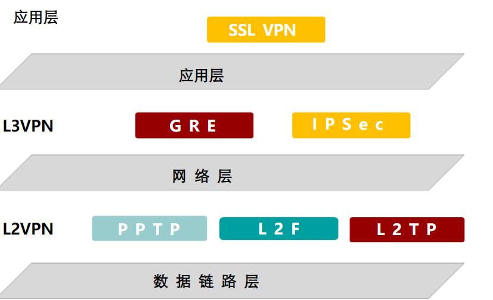

网络安全概述
常见的网络攻击以及安全防范
物理层
设备安全
设备安全，包括设备防潮、防止线缆被破坏等
防范方法：主要靠非技术方面的因素，比如建造坚固的机房等
线路侦听
早期网络多使用集线器、中继器等设备
这些设备所连接的网络属于一个冲突域，如果有人通过集线器和中继器连入了这个网络，那么整个网络中的数据都会被侦听
防范方法：尽可能避免使用集线器和中继器，而是使用交换机互连设备
数据链路层
MAC欺骗
由于LAN网络数据链路通过MAC地址来实现寻址，所以如果有人伪造了MAC地址，就会造成一系列的安全隐患
比如将自己的MAC地址伪造成某机密服务器信任的MAC地址，从而访问机密服务器
防范方法：对可信任的MAC地址进行静态绑定
MAC地址泛洪
由于交换机会自动学习数据包的源MAC地址
所以通过不断伪造MAC地址给交换网络中发送数据包，就可以占满整个MAC转发表，让正常的数据流量以泛洪的方式传输
从而达到监听流量，造成网络拥塞，占用交换机资源的目的
防范方法：
1、配置静态MAC转发表
2、限制交换机端口学习MAC地址的数目
ARP欺骗
ARP欺骗分为两种情况
1、身份伪造
举例：A想要发送数据给B，于是发送ARP寻找B，攻击者发送ARP回复报文，让A误以为攻击者是B，于是将数据发送给攻击者
2、中间人攻击
举例：A想要发送数据给B，AB不同网段，于是发送ARP寻找网关，攻击者发送ARP恢复报文分别给AB，让AB误认为攻击者是他们的网关，于是将数据发送给攻击者，攻击者对数据进行处理后再转发，就造成了中间人攻击
- 注意：arp协议不管是否发送了arp请求，都会根据收到的任何arp应答数据包对本地的arp高速缓存进行更新
- 所以ARP欺骗攻击并不需要被攻击者发送ARP请求，而是攻击者直接发送ARP响应报文，就可以造成ARP欺骗攻击
防范方法：通过DHCP Snooping和DAI进行ARP检测，以防范ARP欺骗攻击
网络层攻击
IP欺骗攻击（IP Spoofing）
又称为IP地址伪造
由于网络层使用IP进行寻址，比如：192.168.1.1访问10.10.10.1机密服务器，此时攻击者先通过其他的攻击方式使192.168.1.1无法接入网络，然后伪造自己的IP地址为1.1，从而非法访问10.10.10.1
防范方法：通过DHCP Snooping和IPSG（IP源防护）技术防范
Smurf攻击
攻击者发送源地址为受害主机，目的地址为广播IP的一个ping流量
所有收到该ping包的主机都会给受害主机发送ICMP响应报文，从而造成dos攻击
Smurf是dos攻击的一种
- dos和ddos的区别
防范方法：
在路由器或者防火墙伤开启Smurf攻击的防范
命令（Route/Firewall）：firewall defend smurf enable
ICMP重定向攻击
路由器特性：当存在次优路由时，路由器会发送重定向报文，告知发送者最优路由
攻击者通过伪造重定向报文达成攻击
比如告知网段内路由器一个假网关，让他们断网
ICMP不可达攻击
攻击者不断给网段内其他PC发送源IP为受害主机的ICMP不可达报文，让其他PC认为受害主机不可达，从而不给受害主机发送数据
防范方法：
1、加一个防火墙
2、修改PC的注册表，使其不处理ICMP重定向报文和不可达报文
IP地址扫描
通过ICMP，TCP协议探测目标网络的所有活动主机，从而确定攻击点
防范方法：防火墙开启
IP Spoofingfirewall defend ip-spoofing enable
传输层攻击
TCP欺骗
情景：
主机A信任主机B但是不信任主机C
于是主机C先攻破主机B，然后得到主机A发送给主机B的TCP参数（seq,ack等），伪造成主机B和主机A建立TCP连接
防范方法：
通过防火墙防范
TCP拒绝服务——SYN Flood攻击
攻击者向服务器发送大量的SYN握手报文，使服务器产生大量的【半开连接】，从而占用服务器资源，导致正常访问者无法访问，产生dos拒绝服务攻击
防范方法：在防火墙开启SYN Flood攻击的防护
半开连接：当TCP协议收到SYN报文时，会开启一个半开连接等待访问者后续的确认报文，半开连接也会占用服务器资源
端口扫描（port scan）
通过一些软件，向大范围的主机发送一系列的TCP/UDP连接，根据应答报文判断端口是否开启，从而寻找攻击点
应用层攻击
缓冲区溢出攻击
利用内存操作的缺陷攻击操作系统，危害大，技术要求高
WEB攻击
对WEB站点进行攻击
以上只是常见的几类攻击，不是说只有这些攻击
网络漏洞多如繁星，攻于防是个永恒的话题
防火墙基础
路由器与交换机的本质是转发，防火墙的本质是控制
先贴上防火墙的基础配置流程

防火墙对经过它的流量进行检查，实现防御
防火墙的分类
按形态分类
- 硬件防火墙：网络防火墙设备
- 软件防火墙：360、火绒
按保护对象分类
- 单机防火墙：个人主机的防火墙
- 网络防火墙：对网站、局域网进行整体网络防护的防火墙
按访问控制方式分类
防火墙按照防护的原理，从早期防火墙到现在可以分为三类
包过滤防火墙
包过滤防火墙是最初的防火墙，防护方式是“逐包检查”。有以下缺点
- 1、逐包检查对设备的性能消耗大
- 2、不能处理多通道协议，比如需要使用两个端口，建立两条TCP通道的FTP协议
- 3、只能检测报文头部（IP、TCP），无法检测应用层数据
所以包过滤防火墙已经被淘汰
代理防火墙
访问者将数据全部转发给防火墙、防火墙检查无误后建立安全连接代理转发给实际设备
建立安全连接的数据后续不会经过防火墙的严格检查（不是不查）
缺点：
1、处理速度慢
2、升级困难
所以代理防火墙也退出了防火墙的舞台
但代理的思想没有退出，现在最典型的应用就是反向代理技术
状态检测防火墙
现在的防火墙都是状态检测防火墙
工作原理：
当有一条数据流经过防火墙时，防火墙检测数据包中是否存在攻击信息等
- 检测通过：记录到防火墙的
session表，数据流中后续报文直接通过session转发- 回应报文通过防火墙时无需严格检测【不是不检测】，直接通过
session转发
- 回应报文通过防火墙时无需严格检测【不是不检测】，直接通过
- 检测失败：不允许数据流中任何数据通过
会话完成后对应的session条目就会被删除、
防火墙组网方式
二层以太网接口
基于二层以太网接口的防火墙组网方式又称透明组网
二层组网不需要更改网络topo和相关配置
在需要给原有网络上增加防火墙，但又不能变动原有网络配置的情况下，使用二层组网
三层以太网接口
一般情况下，使用三成以太网接口进行防火墙组网
三层组网支持更多的安全特性
防火墙性能指标
吞吐量
时延
TCP每秒连接数
并发连接数
防火墙设备管理
管理防火墙有两种方式：
- 命令行管理
- WEB界面管理
华为防火墙默认以g0/0/0为管理接口，并预设了一系列的配置
如接口DHCP、https等
通过直接连接g0/0/0的形式，可以快速的管理防火墙、
华为的防火墙初始自带一个管理员账户，账号admin，密码Admin@123
其他的防火墙有所区别，比如华三账号admin，密码admin
Console管理
和其他设备一样
Web管理
将电脑接入管理口g0/0/0或者可以访问到管理口ip，就可以通过网页访问防火墙
由于不同厂商的防火墙配置命令不同，所以以Web界面配置防火墙的情况居多
华为防火墙需要在管理口允许https服务访问
int g0/0/0 # 进入管理接口
service-manage https permit # 开启https服务访问
模拟器的配置与真实环境不通，需要桥接外部网络
真实环境中可能会存在路由问题，具体情况具体配置
Telnet登录
防火墙缺省不允许telnet登录，所以防火墙telnet需要打开telnet服务并在接口上允许telnet
telnet server enable # 防火墙开启telnet服务
int g0/0/0
service-manage telnet permit # 在接口中开启telnet服务
其他配置和路由器一致
SSH登录
stelnet server enable # 启动ssh服务
user-interface vty 0 4
protocol inbound ssh # 允许ssh协议的流量进入
authentication-mode aaa # 配置用户接口登录模式为aaa
aaa # 进入aaa视图
manager-user sshadmin # 创建管理用户sshadmin
password # 设置用户名和密码
service-type ssh # 设置使用的服务为ssh
level 3 # 设置用户等级3
不知道为啥cmd使用ssh命令不成功，但是crt就没有问题
防火墙安全域与安全策略
防火墙安全域
防火墙安全域（Security Zone），简称区域
和安全策略一起，在防火墙中控制流量的访问
防火墙默认的有四种安全域
- Trust ：受信任区域，安全级别85，内网用户常划入此区域
- Untrust：非受信任区域，安全级别5，外网接口常划入此区域
- DMZ：非军事化区域，安全级别50，服务器集群常划入此区域
- Local：本地区域，安全级别100，防火墙本身（包括防火墙划入其他区域的接口）属于本地区域
这四个区域不能更改，如果不够用，管理员可以自定义新的区域，区域之间安全级和名称不能相同
一个区域里可以划入多个接口，但不能把一个接口划入多个区域
安全级别必须配置，范围是1-100，不配置安全级别的安全区域无法组成安全域间
划分区域是对防火墙接口连接的网段划分区域，防火墙接口本身仍然属于
Local区域防火墙可以配置的安全区域数量和安全区域ID数有关，一般加上默认区域，可以配置十个安全区域
从高安全级到低安全级称为Outbound，反之称为Inbound
这条规则对早期防火墙有对应的配置命令体现，但现在的防火墙并不在意这个
所以对现在的防火墙而言，安全级没有任何意义，只是约定俗成的给安全要求高的区域高安全级
配置
firewall zone name server # 创建防火墙安全域
firewall zone trust # 进入防火墙安全域(进入区域时name可加可不加)
set priority 85 # 配置安全级（配置后不可修改）
add interface GigabitEthernet1/0/0 # 将接口g1/0/0加入该安全域
防火墙安全策略
防火墙安全策略可以看做策略路由，本质就是通过条件抓取流量并执行某个动作，默认动作为deny(拒绝)
安全策略匹配原则:
- 匹配一个条目后不在匹配后续的条目
- 一条安全策略中的所有参数都匹配成功才算匹配成功
- 同一安全策略中，相同条件是或关系，不同条件是与关系
源安全区域source-zone：流量源IP/MAC所在的安全区域
目的安全区域destination-zone：流量目的IP/MAC所在的安全区域
服务service：网络协议，如IP、TCP
应用application：发出流量的应用程序，QQ、微信等
时间段：一个时间范围
配置命令：
security-policy # 进入安全策略视图
rule name ap1 # 创建名为ap1的安全策略
source-zone trust # 源区域
destination-zone untrust # 目的区域
destination-address 192.168.34.0 mask 255.255.255.0 # 目的ip
service icmp http # 服务
action permit # 执行动作
# 其他命令：
rule move ap1 top # 将策略ap1移动到（策略）顶端
配置时，应将条件精细的放在上面，条件宽泛的放在上面
Web页面创建安全域和安全策略
配置桥接，开启服务，访问防火墙Web页面
将接口划入已经存在的安全域
新建安全域
创建安全策略
对安全策略进行操作
防火墙会话表
状态检测防火墙的特点是只对一条流量的首包严格检查，其他流量不再严格检查，以保证转发速度
实现此机制的核心就是会话表
当状态检测防火墙允许流量通过时，会将流量信息写入会话表，后续报文匹配如果匹配会话表，则认为和已经放行的数据包属于同一流量，不在执行严格检查
防火墙会同时产生一个正向会话表和反向会话表，防火墙中查到的都是正向会话表，反向会话表不显示在防火墙中
正向会话表用于匹配此流量后续的请求，只有首包可以产生
反向会话表用于放行对此流量的响应
# 查询会话表
display firewall session table # 查看会话表
display firewall session table verbose # 查看会话表详情
会话表字段解释：
第一行：icmp表示协议，ID唯一标识一条会话
第二行：
Zone：指明流量从什么区域到什么区域TTL：会话存活时间，默认20sLeft：倒计时，会话剩余存活时间，归0后会话删除
第三行：Recv Interface流量入接口
第四行：Interface流量出接口；NextHop：下一跳地址；MAC：下一跳MAC
第五行：<--packets反向会话数据包（响应包）数量及大小；-->packets请求包数量及大小；
第六行：流量转发方向以及匹配的策略名称
反向会话表项与此相反，不在session table中显示
华为防火墙NAT配置
NAT分类
NAT可以分为源NAT和目的NAT两种
- 源NAT：转换源地址的NAT
- NAPT、EasyIP都是源NAT
- 一般用于内网访问外网
- 数据发出时转换源（ip、端口），数据返回时转换目的（ip、端口）
- 目的NAT：转换目的地址的NAT
- 常见的目的NAT只有
NAT Server - 一般用于外网用户访问内网主机（开放服务）
- 数据发出时转换目的（ip、端口），数据返回时转换源（ip、端口）
- 常见的目的NAT只有
华为防火墙配置源NAT
华为防火墙NAT配置与其他设备不同，不能直接在接口nat outbound
而是在安全策略已经放行的基础上，配置nat策略
- 如果是
NAPT，则还需要配置一个nat地址池（地址组）
NAPT配置
1、配置NAT地址池
nat address-group napt # 创建名为napt的nat地址池
section 202.96.137.89 202.96.137.89 # 配置地址范围
2、配置NAT策略
nat-policy # 进入nat策略视图
rule name tu_un # 创建nat策略
source-zone trust
destination-zone untrust
action source-nat address-group napt # 配置执行的动作是转换源，使用地址池napt
3、配置静态路由
ip route-s 0.0.0.0 0 202.96.137.1 # 缺省外指
ip route-s 172.16.0.0 16 192.168.255.1 # 明细回指
4、访问测试
Easy-IP配置
Easy-IP配置和NAPT大体相同，只是无需再创建nat地址池
原理和其他设备一致
1、配置NAT策略
nat-policy
rule name tu_un
source-zone trust
destination-zone untrust
action source-nat easy-ip # 设置动作为easy-ip
2、配置静态路由
ip route-s 0.0.0.0 0 202.96.137.1 # 缺省外指
ip route-s 172.16.0.0 16 192.168.255.1 # 明细回指
配置目的NAT ：NAT SERVER
防火墙配置NAT Server需要在系统视图配置。路由器在接口配置，二者配置命令相同
nat server 0 protocol tcp global 202.96.137.88 www inside 192.168.1.100 www
默认的，为了方便响应包也顺利转换地址，nat server除了正向MAP外，还会生成一条反向MAP
dis firewall server-map # 查看防火墙地址映射表
这条反向映射利弊参半
- 利：由于反向映射的存在，
nat server无需配置源nat - 弊：
- 内网服务器可以借此访问外网，安全性在一定程度上降低
- 外网存在多个出口时，如果想要将内网服务器映射到多个外网地址，会由于反向映射发生冲突
解决多出口NAT server映射冲突问题
多出口NAT server映射冲突问题本质是nat server自动创建的反向映射表冲突
所以只要让反向映射表不在冲突即可
使NAT Server不生成反向映射
没有反向映射，自然不存在冲突，配置是在nat server配置后加上no-reverse
注意，取消反向映射后需要配置源NAT转换地址
nat server 0 protocol tcp global 202.96.137.88 www inside 192.168.1.100 www no-reverse
nat server 1 protocol tcp global 113.100.1.99 www inside 192.168.1.100 www no-reverse
映射表：

将接口划入不同区域
map条目可以分辨不同Zone的映射，所以只要把连接外网的接口一个接口一个区域，就可以避免反向映射冲突
# 创建区域，划入接口
firewall zone name dx id 4
set priority 81
add interface GigabitEthernet1/0/2
firewall zone name lt id 5
set priority 82
add interface GigabitEthernet1/0/3
# 配置安全策略（略）
# 配置nat server并指定zone
nat server 0 zone lt protocol tcp global 202.96.137.88 www inside 192.168.1.100 www
nat server 1 zone dx protocol tcp global 113.100.1.99 www inside 192.168.1.100 www
映射表：
双向NAT应用场景及配置
源NAT、目的NAT都是在一个方向要么转换源地址要么转换目的地址，所以可以称为单向NAT
所谓双向NAT，是指在一个方向上，既转换了源地址又转换了目的地址
双向NAT分域间双向NAT和域内双向NAT
域间双向NAT
域间双向NAT一般用于服务器区域网关不固定的情况，是为了使nat server不受网关变动影响的一种特殊 用法
例如：
在此场景下，FW1的G1/0/0接口地址不再固定为.254。（有点牵强，不过域间双向确实少见）
为了避免网关影响NAT Server，可以配置easy-ip，将去往服务器的流量源地址改为服务器所在网段，从而绕开网关进行二层转发
配置：
# nat server
nat server 0 zone lt protocol tcp global 202.96.137.88 www inside 192.168.1.100 www
# easy-ip
nat-policy
# 源区域lt,目的区域dmz,目的地址192.168.1.0网段的流量，使用easy-ip转换源地址
rule name yj_nat
source-zone lt
destination-zone dmz
destination-address 192.168.1.0 mask 255.255.255.0
action source-nat easy-ip
域内双向NAT
域内双向比起域间双向常用一点
例如：
Server1位于内网，防火墙已经做了nat server使外网可以通过202.96.137.88访问其www服务
现在为了安全性，要求内网用户也只能通过202.96.137.88访问，而不是直接访问172.16.1.10
如果内网用户直接访问外网ip，则流量流向如下图所示：
由于源地址一直是10.1.1.10，所以服务器回应时会直播给客户端发包，导致源目不匹配，TCP握手失败
解决这个问题就需要使用域内双向NAT，在防火墙中将源地址转为防火墙接口地址
配置：
# 基础配置略
# 配置nat server
nat server 0 protocol tcp global 202.96.137.88 www inside 172.16.1.10 www
# 配置easy-ip
nat-policy
# 源区域trust,目的区域trust,目的ip:172.16.1.10的流量，以easy-ip方式转换源地址
rule name easy-ip
source-zone trust
destination-zone trust
destination-address 172.16.1.10 mask 255.255.255.255
action source-nat easy-ip
流量路径：
此时源目一致，TCP连接可以顺利建立，并且是建立两个TCP连接
GRE VPN
VPN 概述
一些大型的公司往往在全国各地分布着多个站点，每个站点都是一个独立的局域网。这些站点往往距离很远，站点之间无法局域网互通，想要站点之间互访时，就需要使用一些特殊技术
在VPN出现之前，主流的有以下两种技术
- 专线
- 通过拉一根光纤连接各个站点实现局域网互通，称之为专线。
- 缺点是成本很高，并且往地里埋光纤需要”资质”，一般企业不一定有“资质”。
- 广电、国家电网、国防的网络部署仍然使用这种方式
- NAT Server
- 通过NAT Server技术将其他站点需要访问的资源映射到公网以实现互访。
- 缺点是不可控，不安全
- 基本已经淘汰，只有少部分学校、企业还在使用
VPN通过在公用网络（通常是因特网）建立一个临时的、安全的连接实现两个站点之间内网的互访。这个临时的连接称为【隧道】
VPN分类
按层次分类：

按场景分类
- Site-to-Site VPN
- 用于两个局域网之间建立连接
- 常用技术：IPSec
- Client-to-Site VPN
- 用于客户端和企业内网之间建立连接
- 常用技术：SSL
GRE VPN概述
GRE（Generic Routing Encapsulation）是通用路由封装协议，可以对某些网络层协议（如IPX、AppleTalk等）的数据报文进行封装，使这些被封装的数据报文能够在IPv4网络中传输。
GRE提供了将一种协议的报文封装在另一种协议报文中的机制，使报文能够在异种网路中传输，而异种报文传输的通道称为Tunnel【隧道】。
GRE VPN基于IP协议，协议号47，属于L3VPN(三层VPN) 、Site-to-Site VPN
GRE对设备的性能的要求较低，可以在不支持MPLS的设备间建立隧道。
GRE VPN 原理
骨干网（广域网）中一般采用单一网络协议（例如IPv4）进行数据报文传输，但是不同的非骨干网（局域网）上可能会使用不同网络协议（例如：IPv6、IPX等）进行数据报文传输。由于骨干网与非骨干网使用的协议不同，这样将导致非骨干网之间无法通过骨干网传输数据报文。
GRE VPN 在非骨干网出口将要去往骨干网的非骨干网报文打上骨干网报文头部，在目的非骨干网入口剥离该头部，从而实现非骨干网报文在骨干网的【透明传输】
透明传输：在传输过程中对外界透明，是内容不可见的安全传输
这点和生活中常说的公开化、透明化含义正好相反
GRE VPN基础配置
FW1:
interface Tunnel 0 # 创建Tunnel接口
ip address 192.168.254.1 255.255.255.0 # 配置接口的ip地址
tunnel-protocol gre # 设置隧道协议
source 202.96.137.88 # 指定隧道在广域网的源IP
destination 113.100.1.99 # 指定隧道在局域网的目的IP
# 配置静态路由
ip route-static 0.0.0.0 0.0.0.0 202.96.137.1
ip route-static 172.16.1.0 255.255.255.0 192.168.254.2
- 指定的源IP和目的IP会作为广域网报文头封装在局域网报文中
- 出口设备必须有指向广域网源IP网段的路由，否则封装后不能转发（没路由啥都不能发）
GRE VPN 防火墙配置
由于防火墙的安全机制，防火墙需要额外的配置
# 将接口划入区域
firewall zone name gre id 4
set priority 11
add interface Tunnel0
firewall zone trust
set priority 85
add interface GigabitEthernet1/0/0
firewall zone untrust
set priority 5
add interface GigabitEthernet1/0/6
# 配置安全策略
security-policy
# gre出方向策略
rule name gre_out
source-zone local
source-zone trust
destination-zone gre
destination-zone untrust
action permit
# gre 入方向策略
rule name gre_in
source-zone gre
source-zone untrust
destination-zone local
destination-zone trust
action permit
策略配置比较特殊
报文从一个站点到另一个站点，可以看做经过两步
- 从内网到Tunnel接口，根据上述区域划分，可看做
trust->gre - Tunnel接口封装公网报头，查路由表，从
G1/0/6接口发出，可看做local->untrust
所以对于从站点发出的报文，要放通trust->gre和local->untrust
反之，从VPN隧道发到站点内的报文，要放通gre->trust和untrust->local
防火墙内部流程如下图
如果不清楚报文流程，可以先全部放通，然后查看
session table
security-policy
default action permit # 设置默认策略为允许
- 从VPN隧道发到站点内的报文：
可以看到产生了俩条Session，gre是从untrust->local,http是gre->trust
- 从站点发出的报文：
正好和从VPN隧道发到站点内的报文相反
对于其他VPN或异类报文在防火墙的策略放通情况，也可以用这个办法测试
防火墙高可靠性
IP-Link
IP-Link多用于无权操作目的地址所在设备，但需要监测链路状态的情况
原理概述
IP-LINK是防火墙通过向指定ip周期性发送探测报文从而判断链路是否失效的技术
- 默认状态，探测报文发送周期： 5s
- 发送报文后，在三个探测周期（默认15s）内没有收到响应报文，则认为当前链路故障
- 链接故障后，IP-Link状态变为Down，并根据具体配置情况执行后续操作（路由切换/主备切换）
- 链接故障后防火墙仍然后不断的发探测报文
- 故障恢复，当防火墙连续收到3个响应报文，则认为链路可以正常使用，IP-Link状态变回UP
IP-Link探测模式
ICMP模式：防火墙向需要探测的目的地址周期性发送ping报文，检查是否可以收到回应报文- 由于ping报文可以跨网段传输，所以
ICMP模式可以探测非直连链路 - 缺点：ping报文容易被过滤
- 由于ping报文可以跨网段传输，所以
arp模式：防火期向目的地址周期性发送arp报文，检查是否可以收到回应报文arp模式不受安全策略影响- 缺点
arp报文只能网段内传输，只支持探测直连链路
IP-Link配置
大多数防火墙会自动放通IP-Link相关的报文，无需配置策略
ip-link check enable # 在防火墙上启用IP-Link检查功能
ip-link name lt # 创建IP-Link，name为lt
destination 202.96.137.1 interface GigabitEthernet1/0/2 mode icmp
# 要探测的地址是202.96.137.1,接口g1/0/2,模式为icmp
# 在静态路由上绑定ip-Link
ip route-static 0.0.0.0 0.0.0.0 202.96.137.1 track ip-link lt
其他命令
dispaly ip-link # 查看ip-link信息
dis ip-link verbose # 查看ip-link详细信息
ip-link name lt
times [2-10] # 指定最大失败次数（默认为3）,指定范围2-10
tx-interval [3-10] # 指定探测报文发送间隔（默认5s）,指定范围3-10
双向转发检测-BFD
BFD多用于有目的地址所在设备操作权限，并且需要监测链路状态的情况
原理概述
BFD检测模式：异步模式
BFD探测报文按发送周期不断的发送探测报文，而不会等待收到回应才发下一个探测报文BFD模式探测周期默认为1s，三个周期内没有收到响应报文，则认为链路故障
当存在多个BDF会话时，通过Discriminator local(本地标识符)和Discriminator remote(远端标识符)区分
原则是：设备A的本地标识符是设备B的远端标识符
BFD会话状态
BFD有四个状态
Down->Init->Up是逐步进行的，没办法直接从Down->Up- 发送方在发送
BFD报文时在Sta字段填入本地当前的会话状态，接受方根据收到的BFD报文以及本端当前状体进行状态机迁移
BFD配置
bfd # 开启bfd
bfd lt bind peer-ip 202.96.137.1 # 创建bfd会话,id为lt,对端ip 202.96.137.1
discriminator local 11 # 设置本地标识符11
discriminator remote 11 # 设置远端标识符11
commit # 提交更改
# 绑定bfd到静态路由
ip route-static 0.0.0.0 0.0.0.0 202.96.137.1 track bfd-session lt
对端也进行相同的配置
display bfd session all # 查看bfd会话概要
display bfd configuration all # 查看bfd配置概要
BFD与IP-Link比较
VRRP——虚拟路由冗余协议
VRRP通过把几台路由设备联合组成一台虚拟的路由设备，将虚拟路由设备的IP地址作为用户的默认网关实现与外部网络通信。
当网关设备发生故障时，VRRP机制能够选举新的网关设备承担数据流量，从而保障网络的可靠通信。
VRRP在IP协议中的协议号是112
基本概念
VRRP路由器: 运行VRRP的路由器
**VRID**：虚拟路由器标识符
- 一个VRRP组由多台使用相同VRID的路由器(接口)组成
- 一个接口可以有多个
VRID - 一个VRRP组只能有一个
Master
VRRP运行在接口上，基于接口工作
虚拟路由器：VRRP每个组都会抽象出一台虚拟路由器
虚拟IP和虚拟MAC：虚拟路由器拥有自己的IP和MAC地址
- 虚拟IP：管理员在配置VRRP是指定，通常情况下作为网关地址
- 虚拟MAC：格式
0000-5e00-01xx，xx为VRID，用于指导二层向Master转发数据
Master路由器：在VRRP组中，只有Master路由器才会响应对虚拟IP地址的请求
- Master路由器会以一定的时间间隔发送VRRP报文到组中，告知Backup路由器自己的存活情况
Backup路由器：除了Master路由器之外的都是Backup路由器
- Backup路由器不负责数据转发，但会实时监听Master路由器发送的VRRP报文，随时准时接替Master
优先级：选举Master和Backup 的依据，范围0-255，值越大越优先，值相等则比较IP地址，越大越优先
- 优先级为255的直接称为Master
- 接口IP和虚拟IP相同的路由器优先级默认255，其他路由器默认100
主备选举
VRRP协议中定义了两个定时器：
- Advertisement_Interval ：Master发送VRRP通告报文的时间周期，缺省值1秒
- Master_Down_Interval ：值为
3 * Advertisement_Interval + Skew_time- Backup收到VRRP报文，会刷新该计时器
- 该计时器超时，Backup路由器转为Master状态
Skew_time指偏移时间，值为
(255 - 优先级) /256优先级越大该值越小
VRRP协议状态机有三种状态：
初始时VRRP设备工作在Initialize状态，收到接口Up的消息后，如果设备的优先级为255，则直接成为Master设备。如果设备的优先级小于255，则会先切换至Backup状态。
如果都不为255或接口IP等于虚拟IP，那么VRRP组内所有设备开始在Backup状态等待Master_Down计时器超时后发送VRRP报文。
由于优先级最高的设备Master_Down计时器时间最短，所以最先超时，切换为Master并发送VRRP报文，其他设备仍然停留在Backup状态
如果优先级相同，则优先级相同的设备都成为Master，然后相互比较VRRP报文中的IP地址，IP地址小的切回Backup
成为Master的设备立即发送免费ARP报文，将虚拟MAC地址通告给连接的设备和主机
主备切换与主备回切
主备切换：
- Master设备主动退出vrrp组，会发送优先级为0的VRRP报文，其他设备收到后重新选举主备
- Master设备链路异常断开，其他设备在等待
Master_Down定时器超时后，重新选举主备
主备回切：
VRRP有两种模式：
- 抢占模式（默认）：当Backup发现Master优先级比自己低时，立即抢占为Master状态
- 非抢占模式：即使Backup发现Master优先级比自己低，也依旧保持Backup状态，直到Master设备失效
负载分担部署：
通过在VRRP设备上创建多个VRRP组，设备在各组中担任不同的角色，让流量负载分担转发
比如R1是组1的Master，组2的Backup，R2反之
这样组1的数据由R1转发，组2的数据由R2转发，就形成了负载分担
配置命令
interface Vlanif11
ip address 172.16.11.253 255.255.255.0
vrrp vrid 1 virtual-ip 172.16.11.254 # 设置vrrp组1在vlanif11的虚拟ip
vrrp vrid 1 priority 120 # 设置本端优先级
vrrp vrid 1 track interface GigabitEthernet0/0/2 reduced 30 # 设置监听端口
#
interface Vlanif12
ip address 172.16.12.252 255.255.255.0
vrrp vrid 1 virtual-ip 172.16.12.254
vrrp vrid 1 track interface GigabitEthernet0/0/2
由于一个vrrp组就是一个虚拟路由器，并且vrrp是基于接口的，所以配置中vlanif11和vlanif12都属于组1，是组1对应的虚拟路由器的两个不同的接口
注：以上为理论玩法，实际配置时一个虚拟地址一个
vrrp组，因为虚拟MAC是基于vrid的。路由器两个接口MAC地址相同，容易出问题尤其在防火墙双机热备中，这样配置会导致VRRP主备选举错误
查看VRRP状态：
display vrrp br
防火墙高可靠性——双机热备
防火墙双机热备是提高网络可靠性，防止单机部署发生故障的技术
有四个核心功能：
- 状态信息备份：业务流量切换后，设备可以直接依据已备份的表项处理报文，无需设备重新分析报文，也无需客户端重新发起连接。
- 配置备份和配置比较：保证主备设备配置一致或负载分担场景中业务不中断
- 故障检测：通过监测链路状态控制优先级，调整主备状态
- 控制VRRP：使用VGMP（VRRP组管理协议）同一控制所有的VRRP组
HRP——华为冗余备份协议
华为防火墙通过hrp协议控制状态、配置备份和故障检测
原理是在部署双机热备的两台防火墙之间连接一条只传递hrp报文的特殊链路，这条链路称为心跳线
心跳线与心跳接口
双机热备组网中，心跳线是两台设备交互消息了解对端状态以及备份配置命令和各种表项的通道。
心跳线两端的接口通常被称之为“心跳接口”。
心跳接口应该只试能转发HRP报文，不要使其转发其他报文
心跳接口的带宽建议不低于峰值业务流量的30%。
心跳线主要用于传递以下消息（统称为HRP报文）
Hello报文（心跳报文）：两端设备定期（默认1s）互相发送心跳报文，目的如下：- 检测对端是否存活
- 了解对端的优先级指标
- 确定本端和对端设备当前状态是否稳定，是否需要故障切换(默认5s收不到对端报文，认为对端故障)
- 配置备份报文和表项备份报文：用于两台设备同步配置命令和状态信息。
- 心跳链路探测报文：检测对端设备的心跳接口能否正常接收本端设备的报文，确定是否有心跳接口可以使用。
- 配置一致性检查报文：用于检测两台设备的关键配置是否一致，如安全策略、NAT等。
这些HRP报文受到firewall packet-filter basic-protocol enable(使能防火墙包过滤基本协议)命令控制
默认情况下该命令开启
设备最多可以有16个心跳接口，所有心跳接口都会传递心跳链路探测报文，但只有一个心跳接口（running状态）会发送其他HRP报文。
- 所以心跳线建议配置链路聚合，保证无带宽闲置
如果所有心跳接口都无法正常的和对端对接，且设备开启了双机热备逃生功能（hrp escape enable），则会开始寻找心跳逃生口用于发送心跳报文。
设备优先尝试配置了VRRP备份组的接口作为逃生口，再尝试HRP监控的接口，最后尝试配置了IP地址的其他接口。
心跳接口注意事项：
- 心跳接口上不能配置vrrp virtual-mac enable命令。
- 两台设备心跳接口的类型、接口编号、链路协议类型必须相同。
- 如果使用
Eth-Trunk接口作为心跳接口，Eth-Trunk接口的成员接口也要相同。 - 如果使用
VLANIF接口作为心跳接口，实际收发报文的二层物理接口也必须相同。
- 如果使用
- 两台设备心跳接口必须加入相同的安全区域。
- 收发
HRP报文的所有接口的MTU值必须大于1500，包括心跳接口和HRP报文经过的其他网络设备的接口。- 配置和表项备份报文的最大长度为1500字节，且不支持分片。如果接口的MTU值小于1500，会导致报文处理失败。
- 当Eth-Trunk或者其子接口为running的心跳接口时，添加状态为Up的接口为Eth-Trunk的成员接口可能导致心跳链路断开，需要shutdown该接口后再尝试。
工作模式和设备角色
根据设备处理业务的方式，可将设备工作模式分为主备模式和负载分担模式
- 主备模式：两台设备一主一备。正常情况下业务流量由主用设备处理。当主用设备故障时，备用设备接替主用设备处理业务流量，保证业务不中断。
- 负载分担模式：两台设备互为主备。正常情况下两台设备共同分担整网的业务流量。
根据配置的备份方式，可将设备工作模式分为镜像模式和非镜像模式
- 镜像模式：是实现主备备份双机热备的一种特殊技术手段，主要用于DCN解决方案中。、
- 非镜像模式：除镜像模式就是非镜像模式
设备角色分为主用设备（Active）、备用设备（Standby）和互为主备（Load Sharing）
当硬件配置一致的两台设备运行正常时（即优先级一致时），双机的工作模式和设备角色由配置决定。
当其中一台设备或其对应的链路出现故障时，两台设备的优先级出现差异，优先级低的故障设备降格为备用设备，双机的工作模式必然切换为主备备份。
设备优先级：
双机热备中的设备优先级代表了设备的综合能力，优先级高的设备更适合承载业务。不可配置
当设备不存在VRRP组或者本端设备的VRRP备份组状态全为Master，对端设备的VRRP备份组状态全为Backup时，双机工作在主备模式
不存在VRRP备份组的情况下，两端设备都没有配置主备机状态，或配置了相同的主备机状态。或者本端设备和对端设备VRRP备份组状态都是既有Master又有Backup时，双机工作在负载分担模式
配置主和配置备
即使设备工作在负载分担模式，为了保证配置一致性，缺省情况双机只允许其中一台设备下发配置，这个设备称为配置主设备，设备名变为设备名_M，另一台为配置备设备，设备名变为设备名_S
备份配置的本质是将配置主设备的配置交由配置备设备再执行一遍
配置主和配置备的选举
- 主备备份模式下：业务主（主用设备）就是配置主，业务备（备份设备）就是配置备
- 负载分担模式下：
- 比较主机名
ASCII码值，ASCII码值小的成为配置主 - 如果主机名相同，比较管理接口MAC地址，MAC地址小的成为配置主
- 比较主机名
设备优先级和故障检测
双机中设备优先级决定设备角色，并且优先级出厂固定，不可更改
一般来说，设备优先级初始如下：
- 单CPU机型：初始优先级45000
- 双CPU机型：初始优先级45002
设备优先级由两个指标决定
故障系数：表示设备发生故障的严重程度系数。故障系数越大越不适合承载业务
接口故障：只有被监控的接口故障时，才会影响故障系数。
被监控的物理接口Down时，故障系数增加
2*故障接口个数如果被监控的是
Eth-Trunk接口，成员接口故障，故障系数增加2*故障成员接口个数，如果同时配置了监控成员接口，故障系数不会叠加计算。如果接口上配置了
VRRP备份组，该接口故障时，故障系数增加2*接口上VRRP备份组数量，如果同时配置了监控该接口，故障系数会叠加计算。监控了VLAN状态，每一个加入该VLAN的接口Down，故障系数增加2。如果同时配置了监控该接口，故障系数会叠加计算。
健壮系数：设备的工作能力系数，等于正常运行的CPU个数乘2
- CPU故障：出现异常的CPU时，健壮系数根据正常运行的CPU情况重算。【CPU故障不影响故障系数】
故障系数小的设备优先级高，故障系数相同时，健壮系数大的设备优先级高
如果希望Trunk接口的部分成员接口故障时不影响设备优先级，可以在设备上配置undo hrp track trunk-member enable命令取消对Trunk接口成员接口状态的监控。
双机防火墙两端通过Hello报文（心跳报文）监测对端优先级，如果发现对端优先级降低，立即执行具体动作（主备切换等）
HRP备份配置
HRP协议支持配置命令实时备份和运行配置批量备份两种备份方式
配置命令实时备份
在双机建立的情况下，在配置主设备执行每一条支持备份的命令都会立即在备设备上再次执行，这就是配置命令实时备份
缺省情况下，对于可以备份的配置命令，只能在配置主设备上执行，配置备设备上不能执行。
如果希望配置备设备也能执行支持备份的配置命令，可以在配置主设备或配置备设备上执行hrp standby config enable命令，开放配置备设备配置权限，在配置备设备上执行的配置也会实时备份到配置主设备上。
对于备份成功的设备，后面会有（+B）的标识
可以使用如下命令查看配置备份情况：
display hrp backup history-command # 查看HRP备份历史记录
运行配置批量备份
在双机防火墙中的一台重启，或者管理员手动执行hrp sync config后，触发运行批量备份
- 双机防火墙重启时触发批量备份：该备份机制仅在镜像模式下生效，并且默认不开启，开启命令为
hrp boot-sync config enable - 管理员手动执行批量备份：立刻执行备份
需要注意：无论是配置命令实时备份还是运行配置批量备份，本质都是将命令复制到配置备设备重新执行一次
如果配置备设备中存在预配，双机备份配置后预配不会删除
如果需要删除配置备预配，需要在配置主设备中执行hrp sync config clean命令，执行此命令后配置备设备比较主备配置命令差异，删除冗余配置命令，然后同步配置主设备中比自己多出的配置命令。
备份检查和备份状态信息
备份检查
为了保证双机配置一致，主备设备会定期（一天）进行配置检查，由配置主设备发起，配置备设备收到一致性检查请求报文后，会收集运行配置，发送给配置主设备。
配置主设备比较自身的运行配置和配置备设备的运行配置，确定两台设备的运行配置是否一致。如果两台设备的配置不一致，配置主设备会产生告警和日志。
管理员也可以在设备上执行hrp compare命令触发一致性检查
状态信息备份
在负载分担组网中，两台设备都会处理业务，生成业务表项。如果业务表项不相同，业务转发可能会发生异常
如图：TCP报文从设备A发出，此时设备A存在该会话，但设备B不存在此会话，当响应报文回来时如果经过设备B转发，设备B会丢弃此报文
为了解决上述问题，需要在设备上开启会话快速备份功能。
开启会话快速备份后，双机设备生成的业务表项会同步备份给对端

开启会话快速备份后，由于会话备份的频率会加大，CPU使用率和心跳接口带宽使用率都会上升。
GVMP——VRRP组管理协议
虚拟路由冗余协议VRRP是部署双机热备的一种不错的选择

通过上下连交换机运行VRRP就可以快速检测链路状态并完成备份
但由于VRRP自身不能跨网段检测接口，即使作了BFD等技术，同一设备的不同VRRP也不能做到同步切换
这就导致了一旦上下行链路某处故障，上下行另一VRRP组无法同步切换状态
为了保证所有VRRP备份组的切换一致性，华为在VRRP的基础上扩展出VGMP，来统一管理所有VRRP组
VGMP通过将同一防火墙的多个VRRP备份组都加入一个VGMP管理组，来保证组内所有VRRP备份状态一致
每台防火墙都有两个VGMP组（不能动），叫做active和standby
active：加入该组的VRRP初始状态默认选举为Masterstandby：加入该组的VRRP初始状态默认选举为Backer
每个VGMP组又有四种状态
initialize：初始化状态 ，设备未启用双机时处于此状态load-balance：负载分担状态，设备自身优先级等于对端，处于此状态。VRRP状态由初始加入的VGMP组决定（加入active就是Master，加入standby就是Backup）active：设备自身优先级大于对端，处于此状态。VRRP组状态都是Masterstandby：设备自身优先级小于对端，处于此状态。VRRP组状态都是Backup
VGMP优先级即防火墙优先级，不可配置，并且启动双机后，VRRP优先级默认固定为120
同HRP，状态为active的VGMP也会通过心跳链接交换HELLO报文（VGMP报文，1s一次，5s收不到认为对端异常）
当VRRP中接口故障时，hrp检测到故障行为并降低防火墙优先级，VGMP状态也随之改变。优先级具体降低数在HRP->设备优先级和故障检测中说明
VGMP默认开启抢占
双机热备组网方式
上下接交换机组网
上下各自接入VRRP组，并由VGMP统一管理
vrrp vrid 1 virtual-ip 1.1.1.1 24 active # 将vrrp组1划入VGMP active组
负载分担模式需要开启会话快速备份
hrp mirror session enable # 开启会话快速备份
开启双机热备命令如下：
hrp interface G1/0/1 remote 10.10.0.2 # 指定本端心跳接口和对端ip
hrp enable # 使能hrp（双机热备）
# 两端都进行此配置，在区域划分和心跳接口配置无误的情况下，双机热备开启
上接路由器下接交换机组网
下行链路配置仍然为VRRP，负载分担仍然需要开启会话快速备份
上行链路运行OSPF，由HRP主动监测链路状态
hrp track interface GigabitEthernet1/0/3 # 监测接口g1/0/3
在主备模式中，备设备上行链路OSPF/OSPFv3开销默认设为65500，如果存在BGP，则BGP中MED值+100
可以通过hrp adjust 命令调整
hrp adjust ospf-cost enable [add cost]
# 启动根据主备状态调整ospf开销【默认启动】;设置备设备开销增加数目【可选】
上下都接路由器的组网一般不存在，若存在上下都用hrp监测即可
二层透明组网
上下接路由器
上下接交换机
二层透明组网，上下路由器和上下交换机的唯一区别在于上下路由器时防火墙接口一定为access
上下交换机可能为access也可能为truck
除此之外没有区别
透明组网需要将相关接口切换为二层接口并划入vlan
interface 10ge 0/0/1
portswitch # 切换为二层接口
其他配置和主备或负载分担没有区别
Link-Group 技术
VRRP由VGMP统一管理执行切换，但hrp主动监测的接口一般只跟随防火墙状态变化
为了避免一些问题（比如来回路径不一致），有时需要将多个物理接口进行绑定、统一管理
加入Link-Group的成员一个故障，全部故障，从而实现对接口的统一管理
状态：
配置命令：
int g1/0/1
link-group 1 # 将接口加入link-group组1